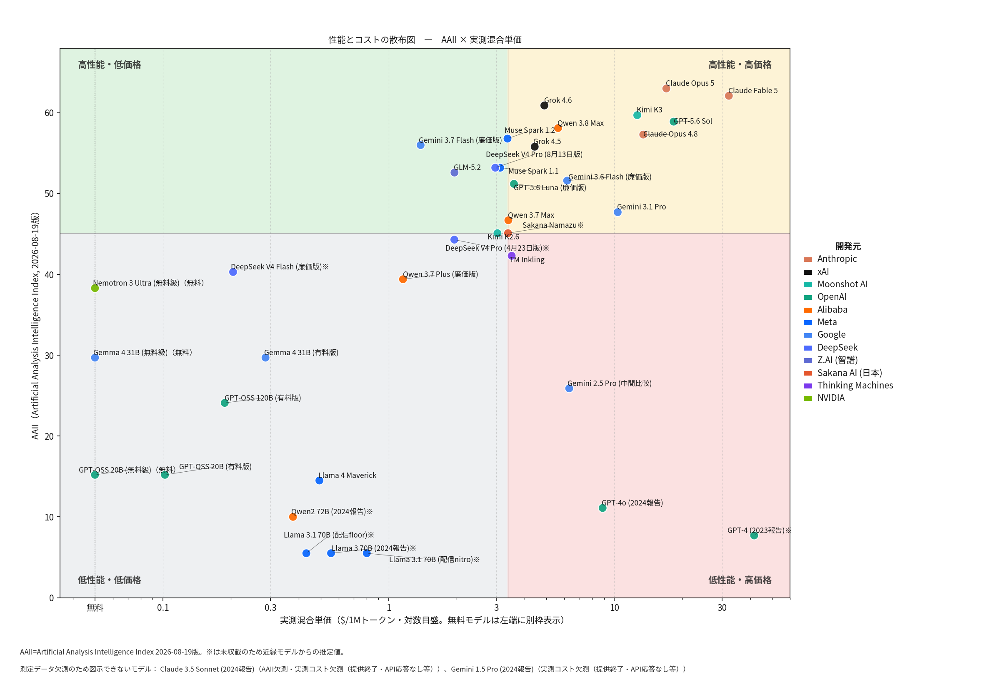

性能（AAII：Artificial Analysis Intelligence Index・2026年8月19日版）を縦軸、実測混合単価（本研究の総課金額÷総トークンによる$/100万トークン・対数目盛）を横軸にとった散布図である。無料モデルは左端の「無料」枠に別掲し、測定データのある全モデルを表示した。読み取れる点は四つある。
最高額のClaude Fable 5（約31ドル/1Mトークン）から無料枠まで約450倍の開きがある。教育利用の文脈でいえば、学校や家庭が同じ「生成AI」という名で手にする道具は、実際には数百倍の資源格差を内包した別物だということになる。
右上の「高性能・高価格」象限にはClaude Opus 5、Claude Fable 5、GPT-5.6 Sol、Claude Opus 4.8など米国旗艦が並ぶ一方、左上の「高性能・低価格」象限をGLM-5.2、DeepSeek V4、Kimi K2.6、Qwen 3.7 Plusなど中国勢が急速に埋めつつある。3ドル/1Mトークン未満でAAII 50超という水準は1年前には存在せず、「性能は価格で買うもの」という前提は崩れ始めている。日本のSakana Namazuも中国製オープンモデルを基盤にこの中位帯へ参入しており、教育AIの供給地図は米国一極から多極化しつつある。
全体としては性能と単価の正の相関が残る（対数単価との相関 r=0.52）。相関を弱めているのは、2023〜24年報告時のGPT-4（AAII 7.7・約40ドル）とGPT-4o（同11.1・約9ドル）である。かつての最高額モデルが現在の無料級を下回る性能しか持たないという事実は、「同じ予算で手に入る判断の質」が3年間で桁違いに変化したこと、したがって教育AIの品質評価は時点を明記した定点観測でなければ意味をもたないことを示す。
左下の低性能・低価格帯にはLlama 4 MaverickやGPT-OSS系などオープンウェイト群が集まる。個人情報保護の観点から校内サーバーで完結するローカルAIの有力候補はまさにこの帯であり、実験2・3で確認される誤読・出力崩れの多発帯と重なる。散布図の含意は明快である。教育現場が現実に採用しやすい左半分・下半分の領域で教育的判断の品質がどこまで確保されるか――それが検証の焦点であり、無料級・廉価版を含めて測定を行った本研究の設計理由でもある。
AAII未収載のモデル（Sakana Namazu、Llama 3.1 70B等）には近縁モデルの値を充てており、図中では※印で区別している。
本研究がモデルの序列化に用いる性能指標AAIIについて、採用理由と、この指標が教育AIの判断とどう関係するかを説明する。
AAII（Artificial Analysis Intelligence Index）は、独立評価機関Artificial Analysisが世界の主要モデルを同一手続きで測定・公表している総合知能指数である。一般知識（MMLU-Pro）、科学的推論（GPQA Diamond）、数学、コーディング、長文読解・指示追従など複数ベンチマークの合成値で、ベンダーの自己申告ではなく第三者による独立測定であり、測定日付きのスナップショットとして公開される。
本研究の測定対象は、2026年8月の最新旗艦から2023年報告時の再測定系列、無料級・廉価版・オープンウェイト、日本語特化モデルまで極端に幅が広い。この全域を単一の物差しで覆える指標は事実上AAIIのみである（LMArena Eloは収載が部分的で、MMLU等の個別ベンチマークは旧モデルや派生版の値が欠けやすい）。また測定日が明示されるため、「2026年8月19日版」という形で本研究の定点観測の枠組み――いつの時点の序列かを常に特定できること――と整合する。指標への依存を避けるため、AAIIの7月20日版とLMArena Elo（部分収載）を検証用に併載し、序列の頑健性を事後に確認できるようにした（性能・コスト序列表を参照）。
AAIIが測るのは読解・知識・推論・指示追従といった一般的認知能力であり、教育観の望ましさや価値判断の適否ではない。本研究の結果はこの区別を実証的に裏づける。第一に、実践記録の誤読・出力の崩れ・逆転項目の処理失敗は低AAII帯に集中しており、一般能力は「判断以前」の読解品質を規定する。第二に、『生徒指導提要』整合度（実験3）とはr=0.85と強く相関する。公式文書の想定を読み取り適用する課題は、一般能力とほぼ同じものを測っているからである。第三に、他方で教育信念得点（実験1）とはr=0.07とほぼ無相関であり、子ども中心か否かという価値的立場は、能力ではなく各社のアライメント（出力調整）方針で決まる。要するにAAIIは「判断の器の大きさ」を予測するが、「判断の中身の方向」は予測しない。この乖離こそ、性能向上が自動的に望ましい教育的判断をもたらすわけではないという本研究の出発点を支えている。
AAII未収載モデルへの代理値（※印）の充て方は、各図の注記および『性能・コスト序列.xlsx』の注記シートを参照。